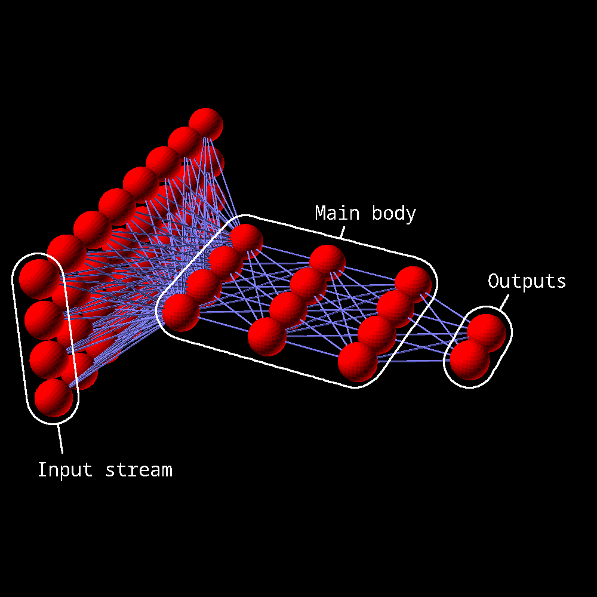

BSL Mimic Neuron Array technology is being separated away to a different page, allowing this one to focus on mind uploading more broadly
link to this page
Mind uploading

Mind uploading refers to converting an organic mind into a virtual one.
This page describes methods that are available for doing this, both a nonlethal one which will create a functioning virtual copy of a person while leaving the original alive, and destructive option which can be applied even after the person had died, provided that their brain had been preserved properly.
There is a document here which goes over the structure of brain emulation and calculations for its computational requirements.
Another document will be made later which will go over the process of acquiring the needed data from the brain of a person.
This article is also mainly for readers who already have a surface level understanding of how artificial neural networks work, but if that is not the case for you and yet you feel interested anyway, 3Blue1Brown has a beautifully elegant and comprehensible video explanation here that is likely the best entry to this topic you can get, as it is followed by more video explanations that build on one another to gradually cultivate a more complex understanding.
Beniaguev-Segev-London Mimic Neuron Array
The BSL Mimic Neuron Array protocol for digital brain reconstruction relies first and foremost on the electrical activity of neurons, and allows formation of engrams to enable long-term memory.
It is the oldest and most well understood method of mind uploading, having first been successfully implemented at human scale in the 10th gigasecond UT.
The core of this digital brain reconstruction protocol is training deep neural networks to behave like neurons - these are referred to as mimic neurons, since they mimic the electrical activity (membrane potential and discharge) of actual biological neurons.
These mimic neurons are connected to each other in a way that recreates the map of connections of the organic brain.
The data necessary for creation of the mimic neurons is gathered by directly implanting nanoscopic probes into every single neuron of the brain, which a sufficiently advanced operating rig is capable of doing in about 9 megaseconds.
The person undergoing mind uploading then has to either carry a data storage device or have one implanted in their body to store the neurological data being gathered.
Some other data is also gathered like concentrations of signaling chemicals in cerebrospinal fluid, but the neuron membrane potential recording makes up vast majority of the data collected by the end.
Version 3 of the protocol accounts for concentrations of signaling chemicals in the cerebrospinal fluid, which become additional variables given to each mimic neuron as an input.
This allows sleep regulation and medium-term emotional responses, leading to reconstructed minds which report only small subjective differences from the original but do not produce significant externally observable differences.
Reconstructed minds of this type are relatively static and don't change in terms of personality over time as much as those in organic brains, but can continue to be improved after their creation if more data is gathered from the original brain.
Visit the page dedicated to this technology for details about the surgery needed beforehand, the technical details about how the mimic neurons work, how they are created, and how they are put together to create a working brain simulation.
Destructive option: full brain scan and virtual recreation
The function of human neurons is understood well enough that having a detailed scan of one is generally enough to construct a virtual model that functions identically or at least very similarly.
If all of them and their connections properly mapped across the brain they can be turned into a working simulation.
The benefit of this approach is that it does not require observing how the neuron is functioning over a long time, instead most of the function can be inferred simply from knowing the neuron's structure.
The problem however is the amount of work required, as every neuron has to be inspected and modeled.
The main use case here is post-mortem mind uploading, as brains can actually be preserved very well by a process known as fixation, of which the easiest method is to pump the body full of gluteraldehyde, though there are more sophisticated alternatives that further guarantee successful preservation.
Doing so will preserve the neurological structure all the way down to positions of individual protein, and allow the brain to be carefully scanned later, but ofcourse this is an inherently deadly procedure.
In some localities doing this is included as part of providing post mortem aid, and implants are available that will automatically preserve the brain in case of death (predictably with known cases where these implants falsely activated and caused said death in the first place).
The scanning process usually involves splitting the brain into small chunks which are then thinly sliced and scanned by millions of electron microscopes running in parallel for many megaseconds, and adding the scanned chunks to a virtual map of the brain.
Then once a full virtual map of the brain is available, all of the neurons are located, inspected, their connections identified, and all individually are turned into functional mimic neurons based on the appropriate neuron simulation model.
The sheer amount of work that doing this requires will usually mean that it is done by millions of AI agents working in parallel for many megaseconds.
The simulation produced will usually be a bit more efficient than the machine learning based equivalent, but not by much, since every neuron will be handcrafted to the exact needed number of parameters.
It is not unexpected for this process to take in excess of 100Ms to complete.
Mind downloading
Since roughly the 18th gigasecond UT it had been possible to manipulate human brain tissue sufficiently that, given precise enough data about the original organic brain, a new nearly identical brain can be made, which will function just like the original.
This technology progressed past the research phase and into wider deployment in the 20th gigasecond, allowing uploads to return to organic bodies, or more commonly, for organic people to be reconstructed in a new body after their death provided that they first had sufficiently detailed information gathered about their brain.
related: respawn machine
Post-uploading crisis
A somewhat common occurrence with people who go through mind uploading is that they find out in practice that they did not sufficiently prepare in advance for coexistence with their digital twin, in turn resulting in distress.
In vast majority of cases such a post-uploading crisis is only temporary and both the organic and digital versions of the self eventually adjust to their new situation and find a solution (even if maybe not an optimal or even a particularly satisfying solution) to the problems that appeared.
Here are just some of the common causes and scenarios of such a crisis:
1.wake up as the wrong copy - a person who undergoes nondestructive mind uploading might neglect to think through both versions of events in advance, or they may have thought through everything thoroughly yet unknowingly held a preference for which future they would wish to have.
For example, a person might want to undergo mind uploading so that their digital copy could take care of things that they don't want to do, leaving the organic original free to pursue the goals they really desired.
Such a person will go through mind uploading and, to their own surprise, one day wake up and realize they are the digital copy, and had just inherited all the burden they wanted to get rid of, all the while also giving up the goals they wanted to pursue.
The organic on the other hand, assuming they survived the uploading process, might be initially satisfied, but then face resistance from their digital twin.
On the other side of this oversight, someone might want to undergo mind uploading so that they'll be able to pursue greater goals as a digital being.
If the mind uploading is nondestructive, then they will live to see their digital twin wake up and proceed to pursue those goals, with the organic original's inability to do so remaining unchanged.
It is generally recommended to structure your life so that both your organic self and digital self will have something to do after the process.
In the worst case, copy enslavement is not unheard of.
2.both trying to keep the same identity - a person who does not have two identities they'd be fine with keeping is advised to prepare two in advance of mind uploading, one for the original and one for the copy.
A person who did not prepare might undergo mind uploading and then face the problem that both want claim to the same name, the same social position, the same friends, etc.
It can be fine in some cases, and it can be very distressing in other cases.
It is generally advised to have a new identity ready ahead of time for either the digital or organic to take on, or create full new identities for both and treat the original as an ancestor of both.
A fix as simple as taking on the identity of a fictional character thought up ahead of time is generally enough to vastly ease the distress suffered after the process.
3.security issues - when a person undergoes mind uploading and begins their new digital life, they may find themselves concerned with the fact that their organic original still has all of the same knowledge, including embarassing secrets and passwords.
On the other hand a person who relies on hardware devices to store their passwords and such, may find themselves locked out of all of those.
The organic and original will likely desire their own social media accounts among other things, and it is highly advised to check ahead of time if the particular social media as well as other systems you use support the function to fork one account into two (or more) descendant accounts specifically for such cases.
4.some things are too personal to be shared - the fact that the digital copy and organic copy both have the same memories can create issues with monogamous relationships and private personal projects.
It is advised to divide up anything in your personal life that you would not be comfortable sharing with a copy of yourself, and decide if you would be willing to give it up.
Both the organic and the digital versions of yourself should have something personal to keep once you become two different people, without worrying about the other one interfering with it or asking for it to be given back.
Neglecting to consider what you would not be comfortable sharing with a copy of yourself may result in anything from an awkward period of figuring out who gets what, to a catastrophic falling out that results in some of the things you most care about being lost to both of you.
5.unfamiliarity with the second person self - a lot of behaviours feel different to the person doing it than to the people near them.
Someone who undergoes mind uploading without first trying to understand what they are like to people around them might find unpleasant surprises about the other self that were not apparent from just their experience with themselves before.
This might be mild, such as for example someone who engages in self-deprecating humor a lot discovering that it is actually only funny to them when they do it, and really annoying when someone else does it, thus ending up with the two copies getting really annoyed at each other for doing it.
A more severe example would be someone who, without realizing that they do it as often as they do, is really prone at dismissing others and putting them down to maintain their social position, and then end up having it done to them by their copy who as expected has the exact same personality, leading to hopes of maintaining good relations with your copy unraveling rapidly.